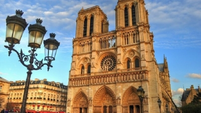

История на катедралите през Новото време
Резултат от Ренесанса (започнал през късното Средновековие) е налагането на хуманизма. Интересът на творците се насочва към човека, а вече не към Бог. Въпреки това строенето и подновяването на катедрали продължава, защото хората не са загубили вярата си в Бог и тези храмове продължават да бъдат едни от най-красивите архитектурни творения. След двете световни войни разрушенията са огромни. Те засягат и голяма част от християнските храмове. В края на 20 век започва въстановяването на много катедрали и църкви, а на някои места дори построяването на нови. Църквите са подпомогнати от съответните държавни институции, а част от средствата са придобити и от населението, чрез дарения.

Катедралата Нотр Дам